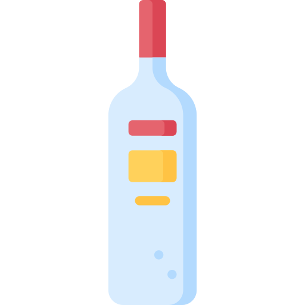

Penne alla Vodka

Silky, Bold & Irresistible
Why it’s perfect for penne
- The smooth, creamy consistency coats penne inside and out, making every bite rich and flavorful.
- Penne’s al dente bite contrasts perfectly with the silky sauce, creating a satisfying mouthfeel.
Regional connection
- While Penne alla Vodka is not a traditional Italian dish, it emerged in Italian-American cuisine and gained global recognition. Some stories trace its origins to Rome in the 1970s, where chefs experimented with vodka to create a smooth, emulsified tomato-cream sauce.
Pro Tip – How to Enjoy It Best
- 🍸Don't skip the vodka! It enhances flavor but evaporates during cooking.
- 🌶️ Add chili flakes for a subtle kick that balances the creaminess.
- 🔥 Toss pasta directly in the sauce to let the starch help bind everything together.